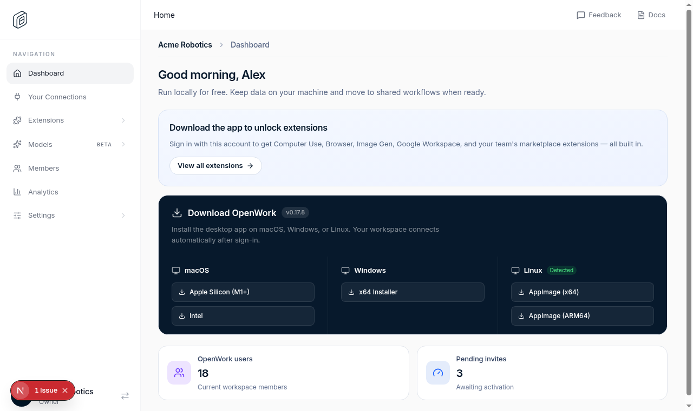

PASSED · 6276ms
Frame 1
The admin sidebar is seven top-level entries with no New badges
The admin sidebar is seven top-level entries with no New badges
The admin sidebar is seven top-level entries with no New badges
Alex opens the company dashboard. The sidebar that used to be sixteen rows deep is now seven things he can say out loud: Dashboard, Your Connections, Extensions, Models, Members, Analytics, Settings. And the wall of NEW badges is gone.

Claim: The admin sidebar shows exactly seven top-level entries and no New badges.
URL: https://3005-cdpnyk579jwxhxte.daytonaproxy01.net/dashboard
- PASS PNG exists and is non-empty 116626 bytes
- PASS PNG dimensions are sane 1280x761
- PASS Frame is not a duplicate of the previous capture 13fd89e8d656
- PASS Required visible text: Dashboard
- PASS Required visible text: Your Connections
- PASS Required visible text: Extensions
- PASS Required visible text: Models
- PASS Required visible text: Members
- PASS Required visible text: Analytics
- PASS Required visible text: Settings
- PASS Rejected visible text: MCP Connections
- PASS Rejected visible text: SCIM
The admin sidebar is seven top-level entries with no New badges
The admin sidebar is seven top-level entries with no New badges
The admin sidebar is seven top-level entries with no New badges

{kind=link}
{kind=link}
{kind=link}
{kind=link}
{kind=link}
{kind=link}